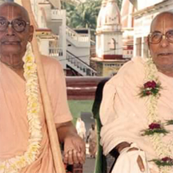
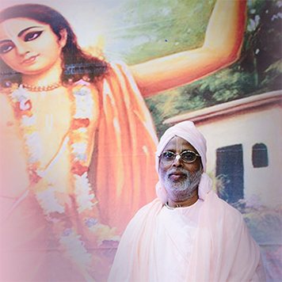

guru
"Guru" significa aquele que remove a
escuridão da ignorância. Todas as
escrituras proclamam que Sri
Gurudeva é a potência direta de Sri
Hari e somente pela misericórdia do
Guru a pessoa recebe a misericórdia
de Sri Krishna, sem essa graça as
entidades vivas não podem avançar
em vida espiritual.

caitanya mahãprabhu
"Ofereço minhas reverências ao
Senhor Gauranga, cuja divina
compleição é de uma radiante
nuance dourada e que possui as
qualidades da mais benevolente
encarnação. Suas atividades
espirituais conferem gratuitamente
a todos amor puro por Deus, Krishna.
Ele é o próprio Senhor Krishna
conhecido na kali-yuga como Sri
Krishna Chaitanya."
harinãma
Harinãma é a encarnação sonora do
Senhor Supremo, é o próprio
Bhagavan. O santo nome é
diretamente Hari e Hari é
diretamente o santo nome, Srī nãma
é substância transcendental e é todo
completo.
Hare Krishna Hare Krishna
Krishna Krishna Hare Hare
Hare Rama Hare Rama
Rama Rama Hare Hare
jīvātmā
A Jiva, alma ou entidade viva é uma
partícula infinitesimal de Deus,
como uma fagulha de fogo que
contém todas as propriedades do
fogo mas é diminuta, e sua posição
constitucional é de serva eterna do
Senhor, Krishna.
karma
Karma e a lei cósmica de ação e
reação, sob seu controle, as almas no
mundo material colhem resultados
bons ou maus de acordo com cada
ato que realizamos.
reencarnação
"Como a alma corporificada passa
continuamente neste corpo, da
infância a juventude e à velhice, da
mesma forma a alma passa a um
outro corpo depois da morte. A alma
auto-realizada não se confunde com